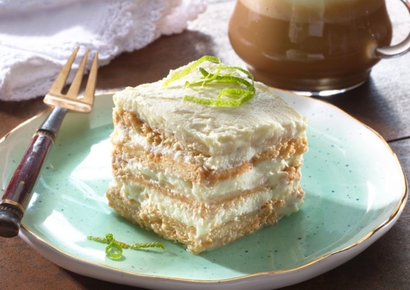

RECETA DE PAY DE LIMÓN
Compartida por Elfega Hernández
timer
person
Ingredientes
- 1 lata de leche condensada
- 1 lata de leche evaporada
- El jugo de 10 limones
- 2 paquetes de galletas Marías
Procedimiento
- Colar el jugo de limón para que quede completamente libre de semillas.
- Licuar el jugo de limón con la leche condensada y evaporada, hasta obtener una pasta que será la base
- Poner una capa de galletas enteras en el refractario, seguida de una capa de la pasta,repitiendo el proceso hasta llenarlo.
- La última capa, que debe ser con la pasta, la puedes decorar con ralladura de limón o trozos de galleta enteros y un toque de canela.
- Finalmente tapas el refractario con papel aluminio y lo dejas enfriar durante 3 horas en el refrí para que esté listo para disfrutar.
